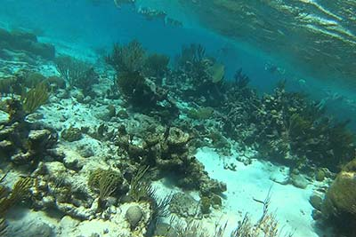

Snorkelling
Snorkelling is Cayman's greatest, easiest underwater adventure and an activity the whole family can enjoy. If you've only fantasized about peeking beneath the sea, there is no safer, gentler and more exciting place to learn this sport than in Cayman's clear, current-free waters. From toddlers to great-grandparents, Cayman snorkelling is ideal for all ages. Our skilled watersports operators are ready to teach you safe snorkelling techniques from the basic levels. You'll practically rub noses with neon fish, float over coral gardens or even stroke a friendly stingray at Stingray City! Watch a parrotfish have lunch, and help keep our beautiful Caribbean beaches covered with pure white sand! Stand up to a patrol of cheeky Sergeant Majors, inspecting you for handouts or float over the wall and marvel as divers from all over the world disappear into the breathtaking, mysterious cobalt blue waters of the Caribbean.
Cayman’s reputation as of the world’s top diving destinations has meant that we sometimes forget to brag about the best snorkelling in the Caribbean, found off our three islands.There are many ways to enjoy snorkelling. Don't miss the original Cayman Islands attraction, a North Sound Stingray City trip with a gregarious Caymanian captain. Later, hover over tarpon at Devils Grotto and Eden Rock or splurge on a half day cruise with lunch and a sampling of snorkelling stops. You can even join a dive boat and watch divers below. Cayman Brac and Little Cayman offer many gentle adventures on shallow reefs right offshore, as well as snorkelling trips with beach picnics.Thanks to Cayman's Marine Park laws, our protected healthy coral reefs and abundant marine life remain our greatest natural attraction. Grab your snorkel gear and discover an unforgettable underwater world for an unforgettable Caribbean vacation!

Grand Cayman Snorkeling
Popular west coast sites which are easy to reach from shore on Grand Cayman include these locations just south of George Town: Coconut Harbour, Sunset House, Seaview Hotel, Parrot's Landing, Watersports Park, Eden Rock Dive Center and the shallows reefs directly off Paradise Reef bar. On Grand Cayman's west coast just north of George Town: Don Foster's dive shop on North Church St. and Calico Jack's are both the best entry points to see the wreck of the Cali.
Cayman Brac Snorkeling
Off Cayman Brac, the easy entry at the Buccaneer's Beach on the north coast is a Cayman snorkeling site with healthy small coral formations and plentiful fish. The entire north coast offers shallow underwater scenery which is primarily pristine and seldom explored. For a real thrill, join a dive boat headed for the wreck of the M/V Capt. Keith Tibbetts, a 330-ft. Russian built frigate sunk in 50-100 ft. off Cayman Brac's northwest coast for a true Cayman snorkeling experience. The view from above will stun you!.
Little Cayman Snorkeling
Little Cayman's South Hole Sound Lagoon and Point of Sand (watch the currents!) are other delightful Caribbean snorkeling sites. Their white sand beaches are as breathtaking as any Caribbean beaches. You might glimpse a feisty bonefish or permit in these waters, as well as Queen conch, parrotfish and dozens of reef fish. For an unforgettable experience; take a boat trip to Bloody Bay, where the wall begins at only 18 ft - an unforgettable sight as lush coral gardens meet sheer vertical coral wall!